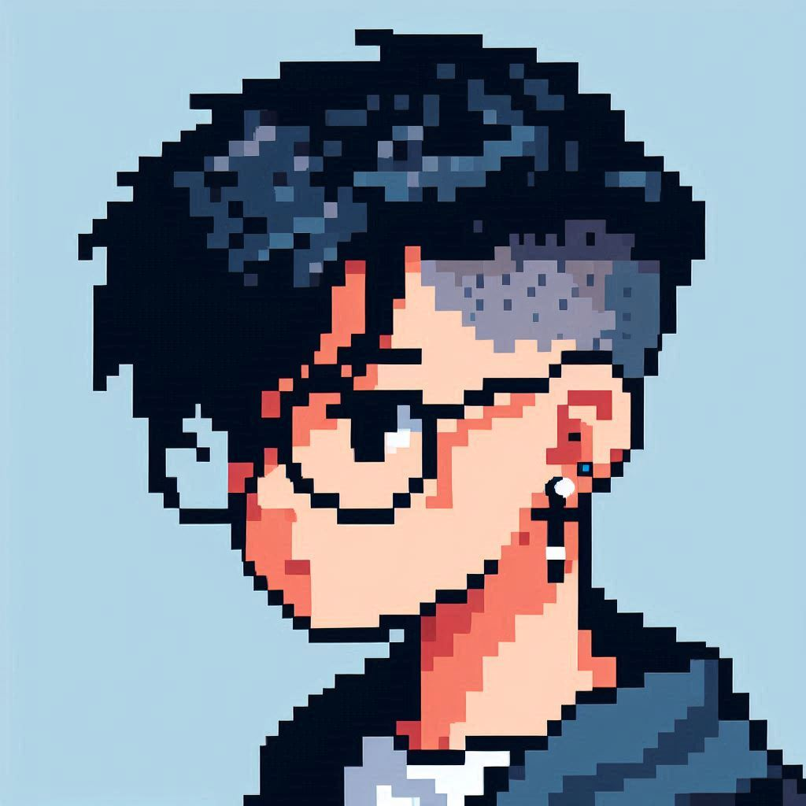

Desenvolvedor
Front-End
SOU DESENVOLVEDOR FRONT-END E DESIGNER EM BUSCA DE APRIMORAR E APLICAR MEUS CONHECIMENTOS. INICIEI MINHA CARREIRA A POUCO TEMPO, MAS TIVE DEDICAÇÃO TOTAL NESSES QUASE DOIS ANOS. ADORO DESIGN MINIMALISTA, DIVERTIDOS E/OU PROFISSIONAIS. ADORO ANIMAIS, TECNOLOGIA E ARTE.
Sobre mim
Olá! Meu nome é Matheus Martins, e sou um desenvolvedor web com 2 anos de experiência focado em criar sites modernos, funcionais e adaptáveis.
Olá! Meu nome é Matheus Martins, e sou um desenvolvedor web com 2 anos de experiência focado em criar sites modernos, funcionais e adaptáveis. Minha especialidade é o desenvolvimento de landing pages que combinam estética e desempenho, sempre garantindo que os sites sejam responsivos e funcionem perfeitamente nos tipos de tela mais populares. Também gosto de explorar criatividade ao criar sites temáticos, transformando ideias únicas em experiências digitais cativantes. Com habilidades em HTML, CSS, JavaScript, Bootstrap e design gráfico, estou sempre buscando aprender e evoluir para entregar soluções de alta qualidade.
VER MAIS
arrow_drop_downMeus projetos
Clique no Botão ou no logo para ir para o site.
Ou clique aqui para ver mais detalhes
Minhas Redes Sociais